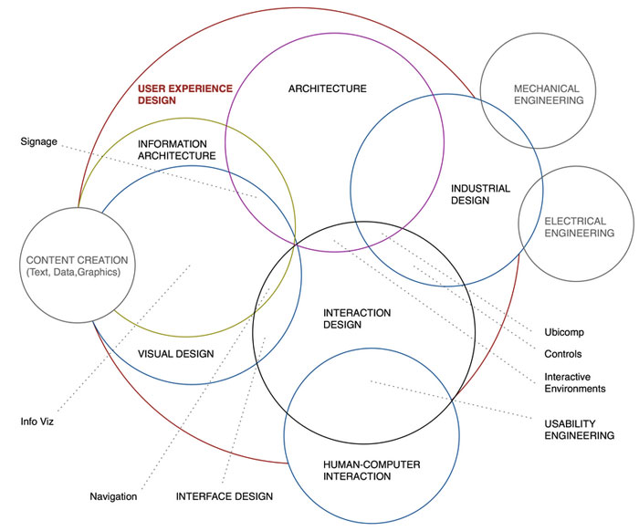
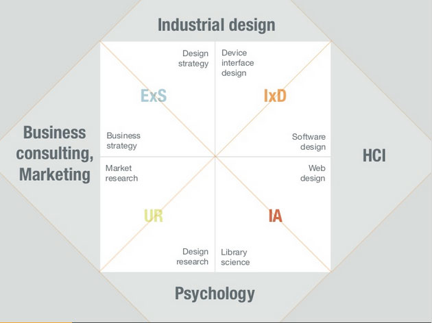

CONFERENCE NOTE DUMP! YEAH!
My commentary is in italics. Updates are ongoing.
Steve Souders: Design + Performance
Tricks to marry design and performance:
- Create small interdisciplinary teams. Bring all players into the mix early in the process
- Define guiding principles. What's most important for producing a successful use experience? Speed is more important than design embellishment
- Prototype early. Have designers work on individual assets. An early prototype helps identify areas where performance will likely be a challenge
- Implement a performance budget. Surface the metrics for the team, and display a clear baseline for what's acceptable.
- Define the most important elements on the page and define custom metrics for those elements. Use user timing API. Track when the image gets rendered.
- Create a bookmarklet to analyze page performance against your specific project metrics.
- Window.onload is not the best metric for analyzing performance. It's more important to optimize for above-the-fold content. Use SpeedIndex from WebPageTest for this. Also SpeedCurve.
Hero Image Delay (HID) problem
- Don't define giant bg images in external CSS. Inline it. Make sure hero IMG is first IMG tag in the page.
- Browsers promote importance of scripts and CSS over images, which blocks rendering. Use async and deferred instead of sticking scripts at the bottom of the page.
Takeaways:
- Identify what matters must.
- Prioritize ux performance.
- Track custom metrics.
Not a fan of frameworks"
- Frameworks are great for prototyping, but write your own code for production.
- I agree!
Samantha Warren: Guerrilla Design Tactics
- Design systems, not pages.
- Get buy-in. They took their stakeholders and other teams out to events to get everyone on board with their small team's project – to define styles and make the company's various sites more consistent and on-brand.
- Used atomic design to create a template
- Developed a component library for front-end developers
- …and nothing changed, despite a ton of buy in. This all sounds very familiar.
- Once stakeholders and affected teams realized that they actually had to change their processes, they became aggressive.
- Conclusions:
- Didn't adapt tools to culture of the organization (people used Photoshop, didn't understand atomic design)
- Didn't speak the language of the executive leadership. Like David and Goliath.
- Design problems can be organizational problems. A designer's responsibility is that ideas get through, and projects get shipped. Not just to design pretty interfaces/experiences.
- Be flexible, fast, and persistent.
- Artists for inspiration: Olek, Banksy, Invader…using premade sweaters, stencils, tiles - because they're fast! And reusable. They just do it; the don't ask for permission. Don't wait for an invitation to do the work you want. Or the work you need.
- Create a strategy. And tactics for use during the project. Crete a framework and break down the problem into smaller chucks. Attack those chicks with your tactics.
- Build a robust toolbox. The best tools are those you know well and can access quickly.
- Map things out. Use a story map/wire flow map to walk through product design <-- I've always loved making these.
- Do what's best for the user. Use style tiles to get away from having stakeholder fall in love with the look of the wireframe.
- Speak the language. $$$
- Be persistent.
- Share your experience with community and your organization.
- ...She has never been successful at automating a pattern library. …uhoh for me.
Pete Smart: Future of the web is…
The intersection of science, technology, and design
Tangible. Haptics. Electrostatic manipulation. Consider possible impact on: shopping, education (embodied cognition), usability (braille), communication (Skype)
Adaptive. Wearables. Internet of Things. Security/authentication (digital footprint, passwords). Mutation (responsive, the grid - machine learning) – analytical, personal, human (adaptive to mood). Are you in the mood for a long read or a short one? Photos or text? Avatar.
Invisible. The web is fluid and unconstrained. Zeros and ones. Ambient interfaces. Ambient beer pong?
For interesting thought experiments reminiscent of this Future of the Web talk, watch Black Mirror. #smashingconf
— Julia Smith (@julia67) April 28, 2015Sara Soueidan: Avoiding SVG Pitfalls
You should probably just read everything Sara has ever written, because it is significantly better than these notes!
- Presentation attributes will override inherited store specified on a parent element.
- CSS overrides inline, which overrides parent attributes
- CSS all: property
- CSS variables (only in FF now)
- Anchor tags inside the SVG will open inside SVG.
- Use xlink-target attribute
- Set xlink namespace on root SVG element
- Don't try to use jquery with SVG.
- Certain CSS and JS characters will break inside svg (<, >, &, etc.).
- Solution: wrap CSS and js in [CDATA] block.
- The viewbox. Always use it because it's super powerful. Check out the demo. Use a clippath to crop svg to viewbox. X and Y of clippath need to be same value as X and Y on viewbox.
- CSSOM methods use coordinates of the page, not of the SVG. Use bbox methods instead.
- No relative positioning, because there's no box model for SVG.
- Solution: nest svgs. This creates a new coordinate system.
Trent Walton: Are we having fun yet?
Perception vs. Reality
Is what we perceive actually the way it is?
Depending on background or role on a project, everyone evaluates the quality of a design from a different perspective:
- Content
- Performance
- Aesthetics
- SEO
- Accessibility
- Etc.
It isn’t that anybody is right or wrong, but they’re coming at it from different places.
The web is edgeless. Organizations should seek to be edgeless as well.
“Edgelessness means blurred lines between the disciplines that work together to make things for the web. Everyone that I’ve spoken with that’s worked on a large responsive project with a big client says that the process disrupts workflows, expectations, and work culture.”
– Frank Chimero, The Web Grain
How do you start working together on a project?
You prototype.
You build something from scratch, without any of the waterfall processes in place. It provides a foundation to build on top of, which can set the whole process up for success. If we’re all working on something in the browser, it helps us to see things in the same way. Our perceptions are going to be less and less compartmentalized. It shifts the way we work and the things we do from “mine” to “ours.” If we’re working together on a prototype, it’s our thing.
“If a picture is worth 1,000 words, a prototype is worth 1,000 meetings.”
Things to keep in mind
- People get really practical when you show them the code that renders something.
- Encourages designers to dive into code. That’s when perceptions overlaps.
- If team members see each other as competitors, things go south quickly.
- You need to get to the point where you see things the same way and you trust each other.
Audience Question: How is it different than design by committee?
Answer: Strong leadership. Respecting everyone’s expertise.
Kristina Halverson: Content/Communication
- Content First: Frequently it just isn’t successful and we’re left with products without copy at the end of the project.
- Think about questions instead of copy. Think about questions and artifacts that should happen early in your design and development process.
- Why do we need this in the first place? Shouldn’t we take some time to strategically consider the things that we’re migrating?
- How is it going to get done?
- Who’s going to do it?
- What tools will you use?
- When is it going to get done? Planning for caveats, turnover, other issues.
- Who is the content for – for your audiences or for you (about us, mission statement, etc)?
- What are your user personas?
- Where does your content currently live? How many platforms, APIs, etc.
- How often do we have to updated it?
- What are the resources needed to update it?
- Once the site is launched, then what happens to your content? What’s next?
- A Core Strategy helps us prioritize and is supported by two parts:
- Substance & Structure: Content audit, etc.
- Workflow & Governance: What processes tools and people are going to be required to sustain this content strategy over time?
"Shift your outlook from content publication to content lifecycle. Don’t just think about helping content go live."
Discovery process
- Content audit. Make a plan for what attributes you’re going to audit. Are you going to set readability standards? Standards for voice and brand appropriateness? Standards for meta tags? For accessibility? Don’t do your content audit manually; use automated tools (like Content Analysis Tool) to inventory your content. Invite the copy writer into the room so they can take an active approach in the conversations about IA and content organization. What content is there that is redundant, outdated or trivial? Is there a style guide? Review search analytics? Legal requirements? Stakeholder agendas? Content owners? Workflow and timeline considerations? Integrity of metadata? Translation requirements? Accessibility requirements?
- Define the project. High-level architecture. Content requirements.
- You don’t always need to design with copy, but know your audience. It needs to set the appropriate tone for the stakeholder you’re presenting to. Use real copy when you can.
After launch
Care for your content. Leave your organization with an ongoing content quality plan. QA for content. Ensure editorial oversight is in place. Teach producers how to tag content appropriately.
Learn about adaptive content
As you deliver content responsively, getting to a state of content reuse will be key to content strategy success.
Takeaways
Empower the writers. Make a style guide. Bring content strategy into your process. Don’t say it’s not your problem because you’re the designer or the developer – the quality of the content affects the quality of the work you produce.
Zeno Rocha: Computer Vision
(@zenorocha)[https://twitter.com/zenorocha]
Computer vision includes:
- Face detection
- Face recognition
- Autonomous robots
- Virtual reality
- Augmented reality
Github:
Steps:
- Access the camera
- Media capture and streams navigator.getUserMedia()
- Reproduce captured content as
<video> - obtain pixel matrix, pit it on
<canvas> - tracking algorithms
Tracking.js
Tracking.js is a tool that "brings different computer vision algorithms and techniques into the browser environment." It has a low learning curve for front-end folks to pick up because it's 100% JavaScript.
Aaron Draplin
This talk was too good. No notes.
So proud of my note taking skills at #smashingconf until @draplin walked up on stage... @ Casa Del Mar https://t.co/V7REuYcCKE
— beckysoll (@beckysoll) April 29, 2015This is awesome @Draplin killing it!... amazing design, super inspirational. #smashingconf
— Brady Sammons (@soulrider911) April 29, 2015I laughed. I cried. I got inspired. @Draplin stole the show at #smashingconf #design #inspiration
— Kris Guadarrama (@kristop) April 29, 2015Thanks for the inspiring, beautiful, hilarious talk at #smashingconf Aaron. @Draplin
— Justin Roberts (@roarked) April 29, 2015@Draplin This was easily one of the best design presentations I've ever seen in my life. Never forget your design roots! #smashingconf
— Penny Tselikis (@penny_tselikis) April 29, 2015Cameron Moll: Thoughts on design
We make mistakes throughout our careers and think it's the end of the road. Ask yourself: When I'm 80 years old, how am I going to feel about how I handled this situation? It's not a waste if you learn from it.
Mental models
- Mental models and intuition come into play when you approach a new experience. You expect it to work the same way as that model.
- Think beyond labels to break out of your own mental models. Don't just think about mobile, tablet, desktop. It's bigger than that.
Responsive Design:
- We assume we're delivering the best experience for it users, but your deliverable may actually break the mental model for a portion of your users. For example, Does my site's mobile version disable pinch and zoom?
- Don't assume we know what's best for our audience. Allow users to determine how they want to use your site. Elective UX.
- Consider: zooming where content reflows.
- RWD is limiting because it's limited to the browser – think about how people use the app for Facebook rather than the browser version.
"The best interface is one that's in reach."
Redefining 'Mobile'
- When we talk about mobile, make the distinction between the noun and the verb.
- Step back and assess how the experiences on different devices come together.
Cohesive UX. Unified UX.
- How do we create a cohesive experience across many screens? How do we form a united whole and not a mindless clone?
- Understand context. Don't assume that every screen needs to be a discrete, unique experience.
- Form and function.
- Data symmetry.
Form and function:
- Good example: Amazon. Gmail. Both keep the same look and process on different devices.
- RWD is great for marketing sites, but it's a nightmare for data heavy, complex sites.
- Rdio doesn't even try to create an experience for mobile web – but that's OK if it was the best approach given the company's goals, resources, and user metrics.
Data symmetry
- The continuity of data and workflow process among different devices.
- Good Example: Rdio's remote control functionality.
- Bad example: Zappos was using local cookies to store shipping cart data, so you couldn't continue the experience on another device.
"Sync verbs, not just nouns"
Create a holistic experience
- Inventory all elements and "cohesify" them.
- Store session data in the cloud, not locally.
- Consider using web views when developing your native app. <-- Huh?
- Replace "click" with "press."
- Replace "mobile" with anything else.
- Respect mental models.
Cameron's presentation
Rachel Andrew: Deployment Workflow
Rachel's talk focused on Wordpress deployment. Check out her blog post on the topic for more details: Developing Robust Deployment Procedures.
Key Points
- Use a virtual machine so your local environment is identical to the remote. You'll need
- Add a deployment service like Beanstalk to the git repo for your project.
- Use a CDN for the site's static assets.
- Still some unsolved problems:
- Pre- and post-processed CSS and JS files
- Backup management
- Database migrations
Jacob Rossi: The Input Shouldn’t Matter (Adaptive Input Experiences)
@jacobrossi – Jacob works on Microsoft's Project Spartan, developing Microsoft Edge (the browser that is to replace IE).
Direct Manipulation
“Point and click” is so old fashioned. Make the user forget they’re touching glass. Touch has to work at 60fps so people feel like they’re interacting with the content, not the screen. Performance is key. If your gesture handling isn’t ongoing, then it isn’t direct manipulation. Gesture libraries aren’t great.
It’s important to be natural. You can do a lot of stuff with gestures, but keep to the basics for the most part. Tap, swipe, pinch – keep it simple so the interaction is still intuitive and accessible.
Use native scrolling and zooming – it’s so important for performance. It’s not about moving down a document, it’s about keeping content stuck to a finger at 60fps.
Scrolling
New w3c standard called CSS Snap Points. Snap Points allow you to take a scrolling region and set up sticky points within the reason – so the browser knows where to snap-to content. Common use cases would be sliding carousels or sliding drawer menus. Can combine with CSS pointer events to do some really cool stuff.
Zooming
The Virtual Viewport
Potential new CSS positioning standard – position:device-fixed
Pointer Events
We need to migrate away from mouse events. Pointer events abstract your code to be input agnostic. Simplicity of mouse events with support for multiple device types (even gestural devices like Leap), including multi-touch (even multi-user) events ,and device-specific properties like pressure. Pointer events can be device-independent when you want it; device-specific when you need it. Pointer events are in I.E., Edge. Firefox and Chrome. No word from Apple yet. JQuery is creating a polyfill for it though.
Demo: https://github.com/jacobrossi/PointerPaint
- Pointer event properties:
- width
- height
- pressure
- tiltx
- tilty
- The tilt properties could allow you to infer handedness – and possibly adjust the UI for left- vs. right-handed users.
Gesture Events
You’d have a gesture object that you can feed pointer events. Gesture-change events.
- Gesture Event Properties
- rotation
- scale
- translationX, translationY
- velocityX, velocityY
- velocityAngular
- velocityExpansion
Resources:
- http://w3.org/TR/pointerevents/
- http://dev.w3.org/csswg/css-snappoints/
- https://docs.webplatform.org/wiki/concepts/Pointer_Events
- https://github.com/jacobrossi
Patty Toland: Design Consistency for the Responsive Web
The goal is to make a web that works for everyone.
People are more far more likely to make a purchase if the site is designed for mobile. In fact, users will leave a site feeling negative if the site is NOT designed for mobile, and this negative feeling about the interaction translates directly into a negative feeling about the brand. It makes users feel like the company doesn’t care about their business.
“One could describe design as a plan for arranging elements to accomplish a particular purpose.”
– Charles Eames
The key to effective design is the ability of the designer to recognize as many constraints and possible and be willing to enthusiastically work within those constraints.
Design consistency isn’t about pixels – it’s about purpose.
Look at both the whole and the detail and make design decisions appropriate for the product.
It’s really hard to predict where your traffic is going to come from, and RWD needs to support a full spectrum of experiences, even the ones that haven’t been invented yet.
Great RWD is only achievable when there’s a really stable foundation in place.
Hierarchy for RWD:
- Style
- Scale
- Access
- Speed
Speed
- People will choose a competitor when there is only a quarter of a second difference in performance.
- More people access Facebook on 2G than 4G.
- Your analytics won’t tell you who left your site before it showed up.
- Factoring speed and performance is critical.
- Filesize and page speed are design choices.
- Challenges:
- Images, video, audio
- Fonts
- Third-party tools (ads, social media)
- Code frameworks
- Data networks
- Always ask: Is it necessary? Is it necessary for everyone? Is it necessary for everyone immediately?
- Pare down to most essential and than optimize.
- Set performance goals in the design spec.
- Consider perceived performance - render above the fold content first
Access
- There’s no good reason to limit access to your base content.
- Progressive enhancement is your friend.
- It ensures broad access and fault tolerance.
- It’s not all or nothing. Think differently about content, source order, structure, interaction.
- Key access considerations:
- Core content (words, images)
- Essential functionality (links, form elements)
- Enhance w/o blocking
- Accessiblity and fallbacks
- Involve QA teams and note expected variations and approaches to testing
- Filamentgroup.com/lab has tutorials for progressive enhancement and other things, with open source tools on github: github.com/filamentgroup
Scale
- Breakpoints
- For static designs 320, 480, 768, etc. are great.
- Filament Group works with illustrator because it’s flexible! <-- My kind of people!
- We want simple math for templates
- Stacking, modular patterns
- Keep template breakpoint logic simple
- Focus complexity in components
traditional design principles should guide your structural decisions. line lengths, etc.
- When the layout gets to a point that feels wrong, that’s when you set the breakpoint for the component. You don’t just have to change the width of the component, you can also consider changing font size, padding, etc.
- Consider layering components that don’t fit on smaller screens
- For tables, each column of table data has its own priority, and then that plays into breakpoints, where less important columns collapse down into collapsible panels.
- TableSaw is an open source tool to handle this.
Style
- Scale to fit the content. Packaging design is an industry that does this really well.
- Put style through the speed filter.
- Are custom font weights worth it? How about rounded corners and gradients (js in IE8)?
- Proceed with Caution:
- Icon fonts
- Fixed positioning
- Custom form elements
- Animation
- Internal scrolling
- Social widgets are really heavy. Load them async.
- For approvals, QA, style guide reference: the code is the documentation. Pattern lab. Move to code as quickly as possible
Takeaways:
- Fast
- Functional
- Simple grids/complex opponents
- Scale & style
- Just enough design, code as documentation
- Test real devices
Patty’s Slides
Andy Budd: The UX of User Experience
Cult of the Wireframe
- Wireframes aren't the solution to every problem.
- Imagine if the aerospace industry used wireframes the way the web design industry does.
- Wireframes are lightweight tools to help designers think through a process and then share with the rest of the team. They aren't dogma.
- People who wireframe – are they designers or documentation people?
Dunning-Krueger Effect
- People who have a tiny bit of knowledge on a subject but really only know the tip of the iceberg. "Stupid is as stupid does."
- The reverse is imposter syndrome.
- The D-K Effect is rampant in the design world, in part due to...
Duality of the phrase UX:
Defining the thing is hard. In different contexts, UX could mean any of the following: A job, a rule, a group, a field, the result of design.
The UX team:
- Usability Specialist
- Information Architect
- Strategist
- Visual Designer
- Interaction Designer
- Etc.
A user experience designer is:
"A conceptual designer who focuses on what a product or service does and how it behaves, rather than what it looks like."
– Andy Budd
Dan Saffer's Model:
Via: http://www.kickerstudio.com/2008/12/the-disciplines-of-user-experience/
Jason Mesut's Model:
- Experience strategy
- Interaction design
- User research
- Information architecture.
 Via: http://www.slideshare.net/jasonmesut/sell-yourself-better-10
What shape of UX designer are you?
- Tell potential employers and clients: X is what I do. Y is what I don't do. How do I fit within your organization?
- We're better as a team. It's better to have a group of good, but not stellar, designers rather than a rock star with an inflated ego and an attitude.
- Hiring focuses on the portfolio. Show sketches, pictures of you facilitating workshops, evidence of your problem solving skills.
- The next desired skills? Prototyping and animation.
Andrew Clarke: Creativity Over Predictability
"I look at today's web design with a growing sense of dissatisfaction. Designs lack energy and spontaneity. Nothing strays beyond the boundary of convention. We're in a soulless period."
"I fear design being crushed under the boot of UX." @Malarkey Agreed, but I fear creativity is crushed by budgets & profits. #smashingconf
— Richard Buecheler (@rb_design) April 29, 2015